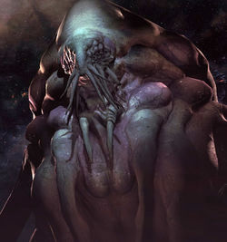
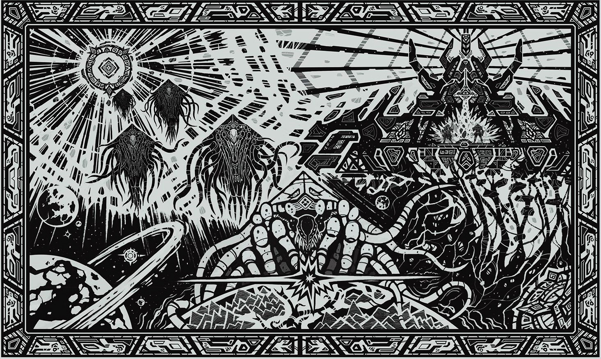

The protoss were engineered by the Xel'Naga along with the planet upon which they lived ( Aiur ).
Although the Xel'Naga modus operandi was to let life created develop on its own, one of them broke this rule and chose to uplift this sentient race
by blessing it with the Purity of Form.
The Xel'Naga under Amon
conceded that their latest creation was their first of all their experiments to evolve beyond the feral constraints of baser life-forms,
and gave this new species the name of "Protoss"( from Greek ) or "Firstborn" .They directly intervened in the development of the protoss,
hoping to create a powerful xel'naga host form they could control.
The protoss developed a rudimentary tribal society based on group-hunting and warrior rule. The Xel'Naga accelerated their evolution with
their khaydarin crystals and
their reproductive rate with the Kassia crystal. The protoss gradually became highly intellectual and introspective.
They achieved great heights in both cultural and personal, individualistic advancements.

The protoss civilization spread across Aiur within a few millennia and the warring tribes settled under a civilized rule.
The tribes were brought even closer together when the Xel'Naga made themselves known to the protoss. Driven to plumb the mysteries of the universe,
the overjoyed protoss looked to Amon's Xel'Naga for new truths and insights with reverence and awe.

In time, however, they became suspicious of the Xel'Naga regarding their interest in protoss affairs. The protoss began to shy from their creators over the months,
with each tribe cultivating wild and unsubstantiated rumors of supposed Xel'Naga treachery. The tribes lost the connection to their primal psychic
link as they attempted to completely sever themselves from the rest of their race, dissolving the last remnants of unity and brotherhood among them.
As such, the Xel'Naga chose to depart the protoss homeworld but the suspicious protoss attacked their worldships, killing many hundreds of Xel'Naga. However, they were held off
while the greater number of worldships were launched. The tribes were left confused and abandoned, turning against each other in despair,
yet a number of protoss went with Amon and continued their worship, later becoming the Tal'darim.
Bent on perpetuating the guilt and blame for their abandonment, the protoss devolved into frantic legions of merciless killers driven by
unthinking hatred towards their brethren, descending into madness as they attacked one another.
Colonies connected by warp gates became gripped with the Strife as well.
Khas ("He who brings order"), an individual who studied the forbidden teachings of the xel'naga and unearthed the khaydarin crystals, channeled their primal energies through himself and
accessed the primordial, psychic bond of the protoss, becoming the first in millennia to do so, and was flooded by emotions emanating from every protoss.
Khas gathered many young protoss together and taught them how to access this bond. They saw that the conflict was folly and believed that the
Xel'Naga had been right to abandon them and that they were indeed a failed creation because their racial essence had been corrupted by the rise of ego.
However, they maintained that the inner conflict of the protoss and racial turmoil was baseless and hollow because their inherent failure was not of their own doing.
Khas developed the Khala religion, calling upon the protoss to forgo their old feuds and reunite. The tribes rallied behind Khas' vision which heralded a bold new age for the protoss.
While the tribes remained intact to remind the protoss of the follies of their past, the Khala called for a shift from tribal society to a caste system
so as to remove the last remnants of the old hostilities and strengthen the resolve to embrace a new beginning.
The Judicator Caste was comprised of elders and statesmen, with its main responsibility being the governing of the protoss under the dicates of the Khala's Law.
The Ara maintained the power within the Judicator Assembly and thus controlled who presided within the ruling Conclave. The Judicator appointed the Shelak to
study and protect the khaydarin crystals.
The Khalai Caste was the largest, representing the driving industrialists, scientists and workers who continued to rebuild their homelands after the Aeon of Strife.
The Furinax Tribe served as weaponsmiths and builders obsessed with merging the sacred energies of the khaydarin crystals with modern technologies.
The Templar Caste was comprised of the holy warriors who followed the Khala's disciplines to achieve ever-escalating pinnacles of psionic power.
The Akilae were entrusted with protecting Aiur.
The protoss built five cities and thirty eight temples across Aiur, and the population swelled to billions. Their growing prosperity led
them to rediscover many of the sciences and studies they had lost. Once the protoss had learned space travel, the Auriga were charged with
servicing the Great Fleet, which protected the space-ways of Aiur.
During this time, the Templar Caste began developing cybernetic warriors with artificial intelligence to augment their ranks.
These became known as the Purifiers, but were not treated as equals to their protoss creators. The Purifiers rebelled against their masters,
killing many before being subdued. They were put into stasis on the ship Cybros above the moon of Endion, a reminder to researchers on the moon of the dangers of progress.
Believing that their individual identities would be erased to further promote the Judicator rule, a few rogue tribes refused to submit to the Khala.
Although they were not hostile or militant, they believed that the Conclave's communal agenda would eventually doom the protoss.
The Conclave kept their existence a secret and ordered the Templar under Executor Adun to eradicate them.
Adun refused, instead teaching the rogues to hide from the Conclave. Eventually the rogues lost control of their powers, alerting the Conclave.
They were secretly banished on a Xel'Naga ship, but still comitted to protect their homeworld.
In this golden age of protoss expansion, motherships led vast armadas throughout deep space to explore.
During the Golden Age, two motherships had their khaydarin cores fail, and they fell into a star.
Grand Preserver Rohana and her sisters felt this, and sought to prevent such a tragedy from happening again.
This resulted in creating the ability for motherships to mass recall and the birth of three arkships that would be a failsafe against protoss society
falling to a random chance.
However, when pondering the question of whether or not to build more, the Grand Preservers discovered they had built the arkships
too early, and told the Conclave that they would be thrown away in a last stand if not saved only for a dire need in protoss civilization.
The Conclave agreed, and the arkships were sealed away. On each one, one of the Grand Preservers were put into stasis, as well as a cadre of protoss warriors.
When the Golden Age came to a close, the motherships were left out in space and the crews put in stasis.
The protoss witnessed the terran arrival in the Koprulu sector and were alarmed at how quick the terrans accessed and drained the natural resources from their various worlds.
But they were forbidden under the dictates of the Dae'Uhl to interfere with the terrans.
They also became aware of a xenomorphic threat, the zerg, another alien species also created by the Xel'Naga which began infesting the terrans with their strains.
The Conclave, leaded by Judicator Aldaris, dispatched Tassadar and a force of protoss to destroy the infestation by purifying the infested worlds.
Tassadar's force failed in its mission, and the remnants traveled to the new zerg homeworld, Char.
There, Tassadar struck an alliance with the Dark Templar prelate Zeratul, against Aldaris' orders, and discovered a weakness in the zerg command structure which could be exploited only by the Dark Templar.
But this information had come to a great cost, for the zerg Overmind had a psi-link with Zeratul and saw the location of the protoss homeworld.
The Overmind quickly launched his assault on the protoss homeworld, sending the majority of the zerg force away from Char and eventually embedded itself onto the planet's crust.
The protoss were losing the battle. Brave heroes such as Fenix fell to the Swarm while defending Aiur's cities and when Tassadar brought Zeratul to Aiur, a protoss civil war
broke out between Tassadar's followers and the followers of the Conclave for disobeying their orders. Eventually Tassadar's faction won and gained the Conclave's aid.
Unimpeded by the Conclave, Tassadar's followers attacked the Overmind itself. Tassadar died during the battle, sacrificing himself by transforming
his ship, the Gantrithor, into a bolt of merged dark templar and high templar energies. Seventy percent of protoss on Aiur were killed in the aftermath and the homeworld got fully infested with zerg.
The Great Fleet was destroyed in the invasion and the Conclave was eradicated. The remainder of Tassadar's followers, mainly Aldaris, Fenix ( whose broken body had been
transplanted into a cybernetic exoskeleton ), Zeratul and Raynor ( a terran ally ) banded together in order to unite and lead the scattered survivors,
but the zerg continued to slaughter every protoss they encountered.
The protoss fled to Shakuras, followed by a zerg faction which they
successfully eradicate with the help of a Xel'Naga temple located on the planet. They saved themselves but advanced the aims of the future zerg leader named
Sarah Kerrigan.
With the assistance of her enigmatic minion Samir Duran, she would later force the protoss into destroying the second Overmind for her, making her the sole leader of the Zerg Swarm.
The protoss attempted a revenge strike on Kerrigan, the self-proclaimed Queen of Blades, because she used the Dark Templar Matriarch, Raszagal, to control them and kill Judicator Aldaris. The strike failed
and Zeratul was forced to release the Matriarch by killing her. This amazed Kerrigan and granted Zeratul a chance to escape.
At this time, Duran abandoned her to conduct protoss/zerg hybridization experiments, which were discovered by Zeratul.

The latter exiled himself for several years following the discovery.
The Khalai struggled to recover from the loss of Aiur while attempting to reunify their society with the Dark Templar.
It was a difficult transition for both sides, and the name Raszagal was invoked more than once to keep the peace.
The Hierarchy was established to govern this new unified protoss, but division nearly caused its collapse.
Only the acceptance of young Praetor Artanis to the role of Hierarch held together the tenuous alliance, for he delivered great courage through the Brood War.
Construction began of a Golden Armada in order to reclaim Aiur from the zerg. Protoss-controlled space has since been referred to as the Daelaam.
Protoss warmed to the idea that if they were to survive, they had to accept change. But they were not yet safe on this new home for a group of dark templars
merged into a single being, a powerful dark archon,
posed a great threat to their society by hunting preservers.

Eventually, the dark archon Ulrezaj got captured in stasis by a preserver at the cost of his life.
At this time, Zeratul set off on a journey to uncover an ancient
prophecy written by the Xel'Naga. He was drawn to the planet Ulaan where he skirmished with Infested Kerrigan as she also searched this prophecy.
After escaping and seeking help to decipher the prophecy from old preservers, he is sent to Aiur at the carcass of the original Overmind where he encounters a spirit of Tassadar.
The late Executor revealed that the directive to destroy the protoss was forced upon the zerg and that Kerrigan was the only one who could free the zerg from slavery.
Zeratul was shown a vision of the last of the protoss being destroyed by hybrids and zerg.
This forced him to call upon the terran Raynor (who knew Sarah Kerrigan before her infestation) to de-infest her using an artifact of Xel'Naga origin.
Sarah Kerrigan is successfully de-infested, getting rid of Amon's corruption passed to her from the Overmind but keeping her psionic potential at maximum.
Zeratul quickly contacts her and after a short clash between the two, he captures Kerrigan's attention and sends her to Zerus, the birthplace of the zerg.
There, she is reborn into a new Queen of Blades made out of primal zerg strains. But Zeratul had sacrificed much to avoid the grim future, being treated as a heretic among the Daelaam.
The protoss spent years rebuilding the Golden Armada to retake Aiur, and in 2506, the fleet was launched to retake their homeworld despite Zeratul's warnings.
However, this coincided with the return of Amon, who corrupted the Khala and possessed every protoss connected to it.
The possessed Hierarch clashed with Zeratul in a duel, with the latter trying to sever the former's connection to the corrupted Khala, succeeding, but ultimately falling at Artanis' blades.
Artanis didn't fall in grief at the loss, instead, he gathered the survivors aboard the arkship the Spear of Adun, and set off to find the means to fight Amon.
They followed Zeratul's lead to the temple of Ulnar, but found the Xel'Naga there dead. Artanis then united the ancient Purifiers and the Tal'darim,
and moved to reclaim their home. The attack was successful; Aiur was reclaimed and Amon was returned to the Void. The protoss,
with the aid of the Terran Dominion and Zerg Swarm, pushed into the Void and protected Kerrigan as she was imparted with Xel'Naga essence, becoming one herself. She then launches into Amon, destroying him.
